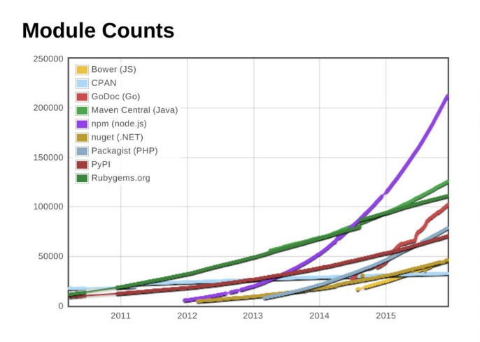
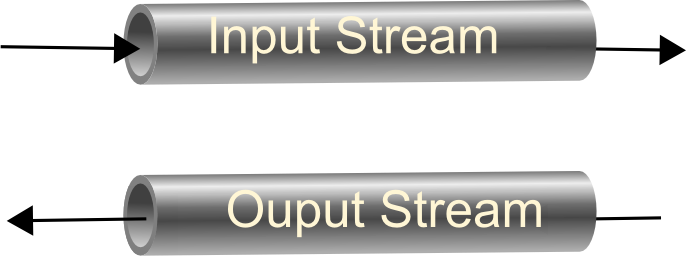
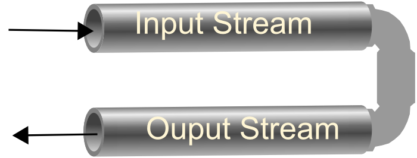
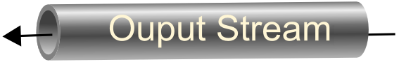

Download Node
Testing your Node-instalation
var http = require('http');
http.createServer(function (req, res) {
res.writeHead(200, {'Content-Type': 'text/plain'});
res.end('Hello World\n');
}).listen(5555, '127.0.0.1');
console.log('Server running at http://127.0.0.1:5555/');
Create a new file; firstServer.js
Add the content above, and execute it with node from the command line:
node firstServer.js
Add the content above, and execute it with node from the command line:
node firstServer.js
A short introduction to NPM - 1
Node's Package Manager (npm)
npm is:
- An online repository (the worlds largest ;-) for publishing open-source Node.js projects;
- A command-line utility for interacting with this repository that aids in:
- package installation
- version management
- and dependency management
npm the worlds largest code repository
A short introduction to NPM - 2
Node's Package Manager
Using NPM
- Create an new folder somewhere on your system called nodeExercises
- Open a command prompt and navigate to your new folder and type: npm install learnyounode
- Since development goes so fast, global packages often gets "old" early, even for a new node-installation
Do a:
npm i npm@latest -g - See what was generated in the folder
- Type learnyounode → Nothing happens
- Install it globally: npm install learnyounode -g
- Type learnyounode
- If you want to see what and where things were installed type:
- npm root
- npm bin
- npm root -g
- npm bin -g

How to Node
http://nodejs.org/api/
Node and Asynchronous Programming
First "The old way"
var fs = require('fs');
var content = fs.readFileSync(process.argv[2]);
console.log("When do we see this output?");
console.log(content.toString());
All synchronous (or blocking) filesystem methods in the fs module end with 'Sync'.
The readFileSync(..) method returns a Buffer.
Buffer objects are Node's way of efficiently representing arbitrary arrays of data, whether it be ascii, binary or some other format.
Buffer objects can be converted to strings by calling the toString() method
Buffer objects are Node's way of efficiently representing arbitrary arrays of data, whether it be ascii, binary or some other format.
Buffer objects can be converted to strings by calling the toString() method
process.argv[2] returns the first argument passed to your program i.e. node myProg arg1 arg 2
Write and execute the program
Node and Asynchronous Programming
The "Node/JavaScript way"
var fs = require('fs');
fs.readFile(process.argv[2],function(err,data ){
if(err){
console.log("Error");
}
else{
console.log( data.toString());
};
});
console.log("When do we see this output?");
- The callback delivers data via a Buffer
- Observe the standard error check node pattern
Write and execute the program
Streams and Pipes
Just like in Java, streams are an important abstraction in Node, when doing IO

As in java, we can have input or output streams

A readable stream can be piped to a writable stream by doing
readableStream.pipe(writableStream)
Streams
Functions on Streams

Readable Streams will emit data events each time they get a "chunk" of data and then
they will
emit an end event when they are all finished (the observer pattern)

Writable Streams must implement two functions: write and end.
When we write data to a writable stream it will return either true or false. True means keep sending more data with write and false means don't write any more data until it emit drain. This feature lets a stream communicate "upstream" to it's writers
When we write data to a writable stream it will return either true or false. True means keep sending more data with write and false means don't write any more data until it emit drain. This feature lets a stream communicate "upstream" to it's writers
Streams and Pipes
Example - Copying a File, Downloading a file
var fs = require("fs");
fs.createReadStream(process.argv[2])
.pipe(fs.createWriteStream(process.argv[3]));
Both the http- request and response objects are Node streams!
So we can use the streaming abstractions to send and receive data
var request = require("request");
var fs = require("fs");
// HTTP GET Request
request("http://plaul3.cloudapp.net:9090/CA-Chat.jar")
.pipe(fs.createWriteStream("chat.jar"));
Node networking
Node.js, like Java as we already have seen, ships with a number of built in capabilities for networking.
This week we will focus on the http and net modules to design some simple http and TCP server and client examples. After that, we wil mainly use the external Express module to build or web-servers
Node networking
HTTP Client Example
var http = require('http');
var request =http.get(process.argv[2],function(response){
response.setEncoding("utf8"); //If we dont do this, data is returned in a Buffer
var allData = "";
response.on("data",function(data){
allData += data;
});
response.on("end",function(){
console.log(allData);
});
});
request.on("error",function(e){
console.log("ups: "+e);
});
The get method is a convenience method for GET-requests. In the exercises you will use the
http.request(..) method.
The "data" event is emitted when a chunk of data is available and can be emitted
many times for a single request.
Node networking
A HTTP Server Example
var http = require('http');
http.createServer(function (request, response) {
response.writeHead(200, {'Content-Type': 'text/plain'});
response.end('Hello World\n');
}).listen(1337, '127.0.0.1');
console.log('Server running at http://127.0.0.1:1337/');
Node networking
TCP Echo Server
var net = require('net');
var server = net.createServer(function (socket) {
socket.write('Echo server\r\n'); //We can write to the socket
//Wee could have "subscribed" on the sockets dataevent
//Or, for an echo server, just pipe the input stream to the output stream :-)
socket.pipe(socket);
});
server.listen(1337, '127.0.0.1');
Rest of today; Exercises :-)